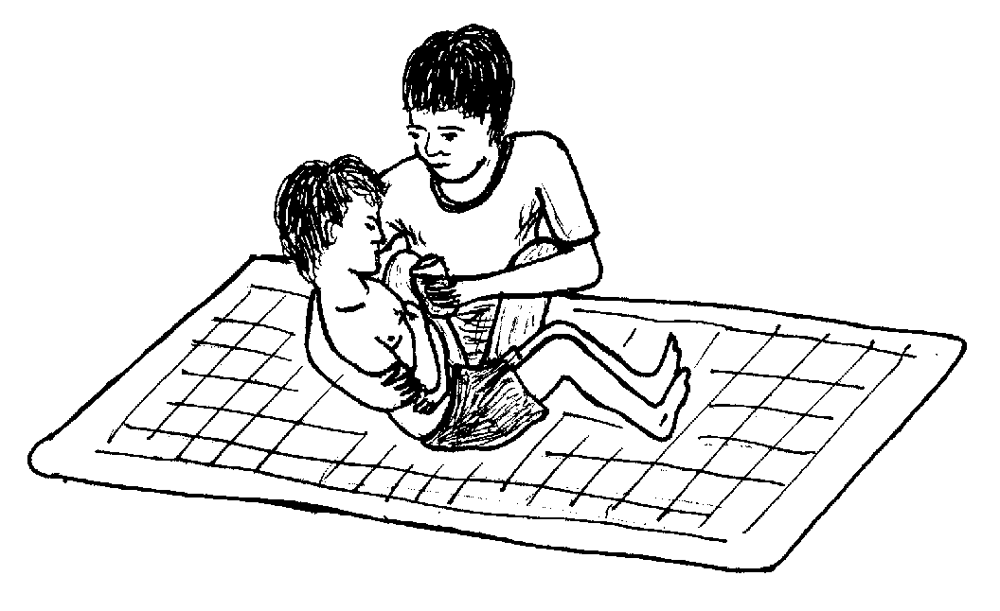
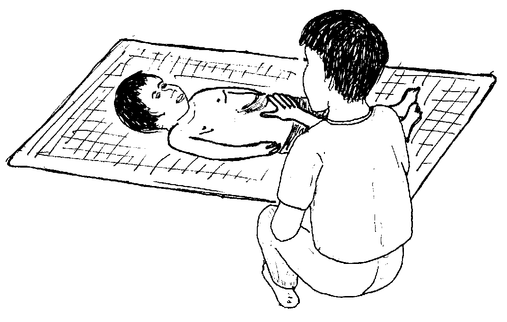
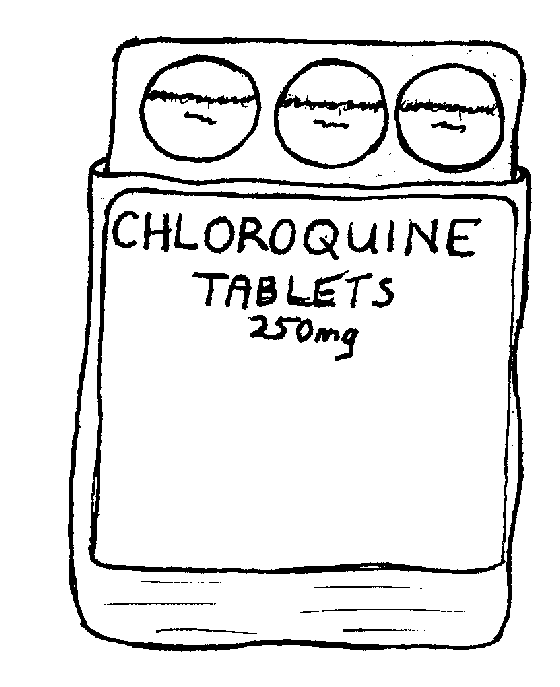
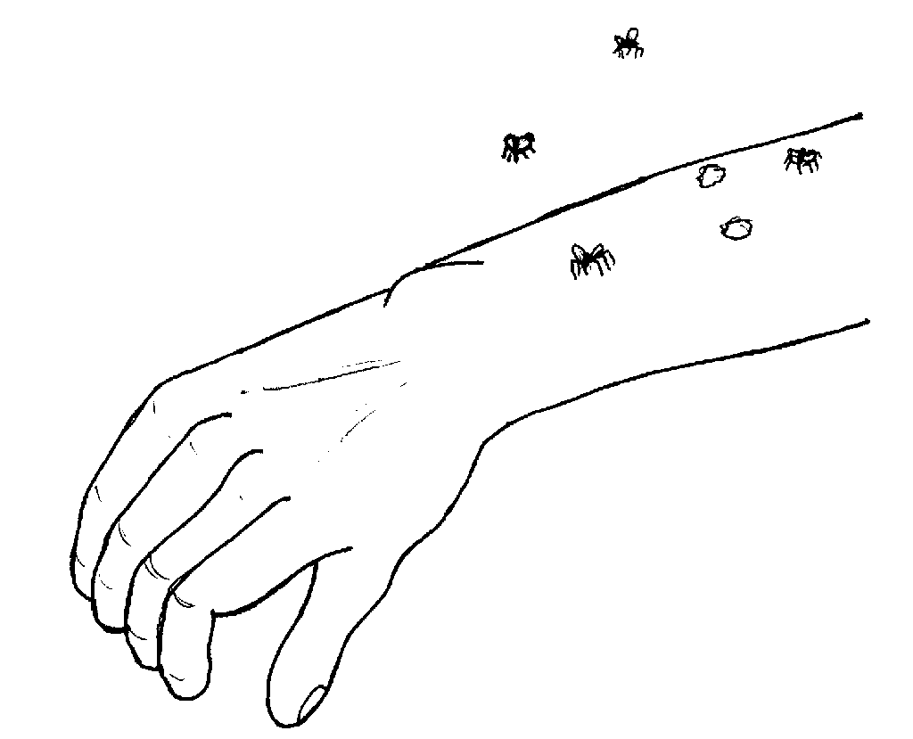
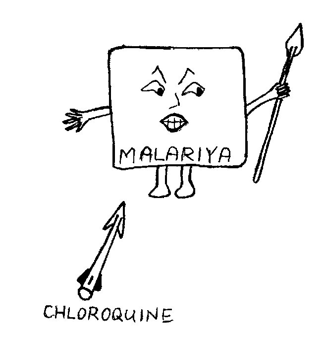
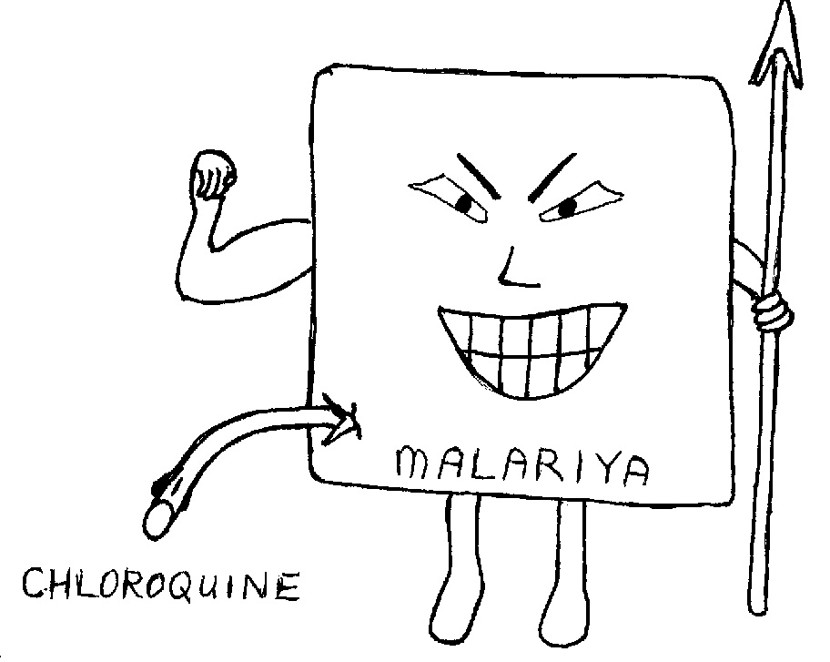
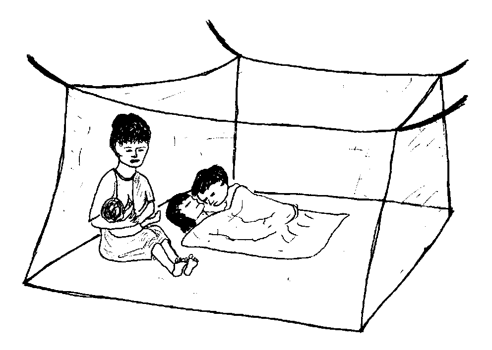
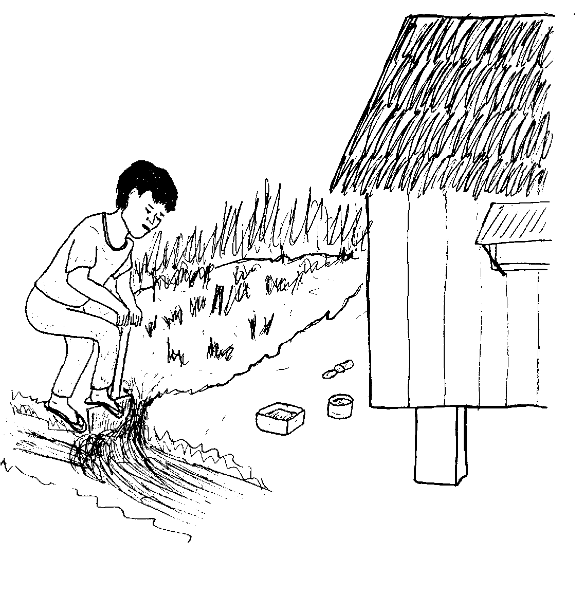

Matigsalug Manobo Healthbooks
Previous Healthbook Up to main Healthbooks page Next Healthbook
Vernacular Lexicon
A
B
BAP
BL
D
E
G
H
I
K
KI
L
LA
LIP
M
N
O
P
PA
R
S
SE
SIN
T
TE
TIN
U
V
W
Y
Z
Healthbooks
Sabekan maselem, te peg-enew enni Inuk te alunggun, nakita ran ne miglusungan si Junjun. Miggibat-hibat si Junjun ka egkelkelen wey egkaagsilan.
Natagtaheed, migmasakit e ka ulu rin wey hendue teg pekeileb sikandin.
Te pegsamsam ni Inuk ki Junjun, meinit amana ka lawa rin, amanan migmasumpit ka lusung din. Due-rue ne migluungan din si Junjun wey impeinum din te dakel ne weyig su nakanengneng din neg pakalibuwan ki Junjun teg lusungan.

Te meudtu, miglibuwanan e si Junjun wey kenad e ne masumpit ka lusung din.
Seeyen marusilem, ingkahiyan ni Inuk si Lolita te, “Kema ke migmalariya seini se anak ta.”

Insamsam din ka kakiliran ni Junjun, mania te duen e malit din.
Ne migkahiyan din e si Lolita te, “Nakanengneng ad te malariya seini se inggeram din tenged te me palinneu wey ka malit din, ne sika ka palinneu keg deralu ki te malariya.
“Su nakanengneng ki te due malariya kayin lugar.”
Ne migkahi sikandin te, “Keilangan neg peinumen ta sikandin te bawi ne aralin su ke keneg pekeinum, egpabulusan sikandin eglusungi te tagse daruwa peendiye te tatelun aldew.”
Ne migtentengan ni Inuk ka tahuanan te tablitas. Ne nabasaan din ka insulat keg menuwen teg peinum te me buyag:
4 pad man-e ne tablitas seled te 24 ne uras,
2 pad man-e ne tablitas seled te 24 ne uras.

Nakanengneng si Inuk te keneg pekeg-iling ka kasulug te tablitas ne igpeinum te me bate wey te me buyag. Ne nataman, migbasa rin e man-e ka insulat diyet tahuanan te tablitas ne para te me bate. Dyis ka idad ni Junjun purisu keilangan neg peinumen de sikandin te:
2 pad man-e ne tablitas seled te 24 ne uras,
1 pad man-e ne tablitas seled te 24 ne uras.
Nakanengneng si Inuk te keilangan neg dumeen din pad si Junjun diyet klinik ke ware din nataheyi ke pilan tablitas ka igpeinum kandin.
Hengkayi te seup e ne aldew, bayew egkeulii si Junjun. Ne mig-inse sikandin te amey rin te, “Nekey-a ka paligkatan mania te migmalariya a?”
Ne migkahi si Inuk te, “Ka malariya, egkeuyan te me higtek. Seinin kalasi te higtek, wey re eglepew ke marusilem. Emun keg kahatan te higtek ka etew ne migderalu te malariya, duen egkeuyan te higtek ne kahew te malariya. Ne sikan naa kag malariyen e degma kag kakahatan te seeyen higtek.”

Ne mig-inse si Lolita, “Malehet ne diyeg puun ka malariya te higtek? Su egkahiyen te me alukuy ku ne diye kun egkaangey keg pamanihus ki timpu te meinit.”
Ne migtabak ka asawa rin te, “Due sabeka ne kalasi te higtek ne sika ka egpekeuyan te kahew te malariya. Saatu-pa, kenen malehet ka ingkahi te alukuy nu.”
Ne migkahi man-e sikandin te, “Sika se aralin, sika ka egpekeyimatey te me kahew te malariya, ne emun keg pamatey e sikandan, egkeulian kid degma kag lusungan.”

Ne migkahi si Lolita te, “Piru due timpu ne keneg pakabawi ka me tablitas iling te aralin.”

Ne migpabulus si Inuk ka migkahi te, “Uya, malehet su due duman me etew ne amanan masumpit neg lusungan su manekal amana ka kahew te malariya diyet kandan. Ne puun due, keneg pakabawi kandan ka me aralin.
“Tenged te subla ka lusung dan, egkewulep de due sikandan wey egmakalawag e ka me laplap dan.
“Emun ke dueg keiling kayi neg deralu, keilangan ne due-rue igpeendiyad te huspital su eyew diyeg bawii.”
Ne mig-inse si Junjun, “Nekey-a kag gimuwen te kahew kayit keddiey?”
Ne migtabak si Inuk te, “Sika se kahew te malariya, diye mig-ugpe te langesa. Sikandan kag dereet te langesa ta, purisu egmalariyeen kid. Ne iyan igtulin te malit ke egmalariyeen ki su naawe e ka nareetan ne langesa.”
Ne migkahi si Inuk te, “Dueg gimuwen ta ne eyew ware amana higtek kayit inged ta.
“Ne kaaselem, keilangan neg luwangan ta ka linsebuk duet limang te baley wey egpangameten ka mallayat ne me hilamunen su sika ka eg-ugpaan te me higtek. Su ka egkasubung ne weyig ka igkeupii te higtek teg ugpe.
“Su due inged ne warad egmalariyeen tenged su impangawe e te me etew ka nenasubung ne me weyig neg pangubpaan te me higtek.
“Ikarangeb, iyan ku igkeupii ne egbubukus ki langun te me ulesen te marusilem su eyew kene ki egkakahatan te higtek.
“Egbeli a te kulambu ne igkukulambu ta te marusilem keg mangipereng ki. Ne keilangan ne sikanta langun egseled due te kulambu. Ke kene kig pakabeli te kulambu, egkaayun ne egpupules ki.”

Seup ne aldew, nakabeli e si Inuk te kulambu para te pamilya rin wey migbunsud e migluluwang te nasubung ne weyig wey migkamet te mallayat ne me hilamunen diyet sapiling dan.

Miglinisan dan man-e ka langun ne me lapek wey ka langun ne diyet lama ran wey ka me lata neg katahuan te weyig keg uran su sika kag ugpaan man-e te me higtek.
Puun te inggimu ni Inuk, miglibulung ka langun te seeyen bariyu ne migpegsabutey teg linisan dan ka bariyu ran.
Ne puun dutu, deisek naan de ka higtek diyet bariyu ran wey warad amanag deralu te malariya.
Egmenuwen taa teg pekeila te etew neg malariyeen?
Egmenuwen-a teg peinum ka aralin (chloroquine) teg malariyeen?
Ken-u taa eg-uyana ka egderalu te malariya diyet huspital?
Nekey-a kag puunan te malariya?
Nekey kag gimuwen ta su eyew ware amana egmalariyeen kayit kanta ne inged?
Egsawang-sawang neg kelkelen, masakit se ulu, amanag lusungi wey eglimusengi, wey sengekakuwa due malit. (Lukib 39, 41)
Egpeinumen ka me buyag te: 4 ne tablitas an-anayan 4 pad ne tablitas seled te 12 uras 2 pad man-e ne tablitas te 24 uras. Keneg pekeg-iling ka kasulug te tablitas ne igpeinum te me bate wey te me buyag. Keilangan neg dumeen ka me bate diyet klinik ke ware nataheyi ke pilan tablitas ka igpeinum kandan. (Lukib 43)
Emun ke keneg keulian te aralin ne nasi egmasumpit ka dalu ran, wey keg makalawag dan e wey layun de egkewulep, henduen pad eg-uyana diyet huspital. (Lukib 47)
Diyeg puun ka malariya te deisek amanan kahew. (Lukib 45) Ne sika egkeuyan te sabeka re ne kalasi te higtek ne wey re eglihawang ke marusilem. (Lukib 49)
Pinaahi te pegpaawe wey ke peggimatey te higtek te seinin paahi te diralem. (a) Pinaahi te pegbunbun te laplap ta keg marusilem e. (Lukib 51) (b) Pinaahi te pegkukulambu te marusilem diye teg gibatan ta. (Lukib 51, 53) (c) Pinaahi te pegluwang te nasubung ne weyig, eg-aween ka me lapek wey egkameten ka mallayat ne me hilamunen ne marani te baley ne sika ka eg-ugpaan te me higtek. (Lukib 51, 53)
This page last updated: 03-Jan-2020
Copyright © 2009-2010